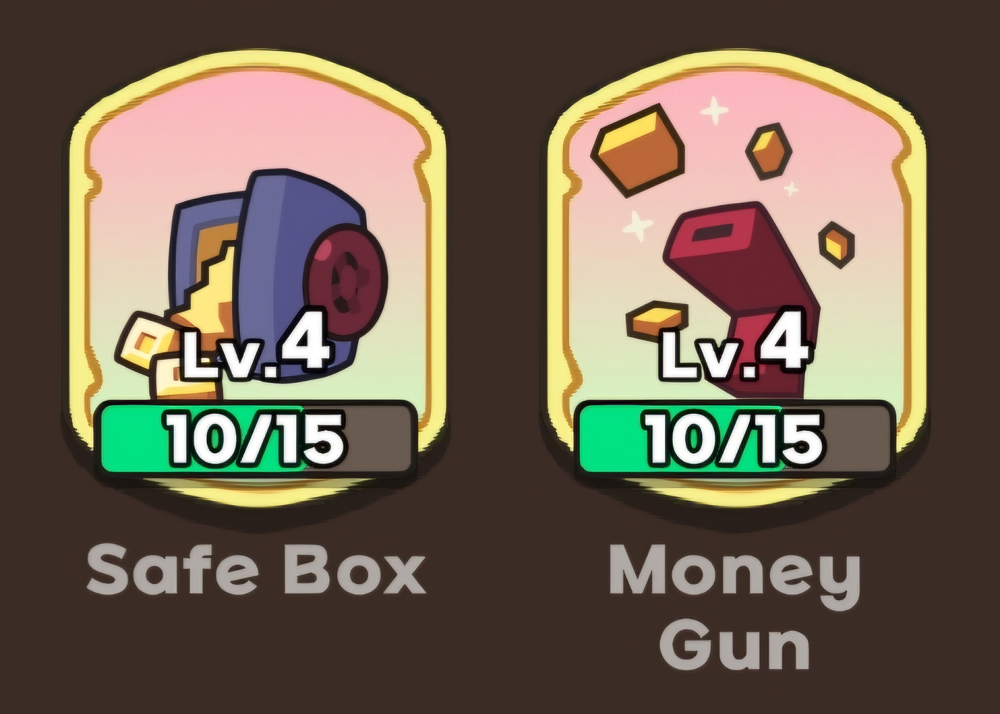
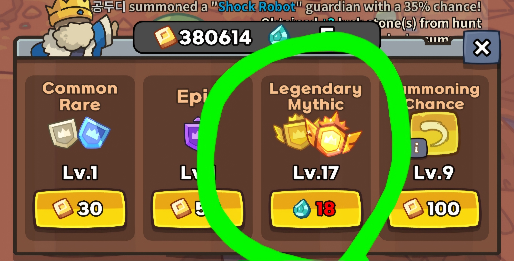

What does sb/mg stand for?
Sb/mg stands for "Safe Box and Money Gun". These are artifacts you can unlock with keys. When you see people say "You need at least 7/7 sb/mg for hell mode" for example, what they're saying is to clear hell mode you need your Safe Box and Money Gun artifacts to both be at least level 7.
Why are these artifacts so powerful?
Safe Box and Money Gun synergize together in a way that can give you massive bonuses to you damage. Below are pictures of these artifacts so you can see what they do
How to get 100k+ gold using Safe Box
The basic idea is to avoid spending gold, and just gamble for most of the first half of the game. The more gold you have, the more money Safe Box gives you at the end of a wave. How much gold can you get from this? Well theoretically, let's say you have 100 gold. Let's also say there are NO enemies being killed, so your only source of gold is Safe Box every way. This is how much money you would earn with Safe Box after 80 waves
- Level 1 SB - 4,956 gold
- Level 2 SB - 7,247 gold
- Level 3 SB - 10,579 gold
- Level 4 SB - 15,415 gold
- Level 5 SB - 22,423 gold
- Level 6 SB - 32,559 gold
On top of this, you also get a lot of gold from defeating enemies. If you can build up to at least 10k gold by wave 30, you can start to spend a little bit more on summons. Keep in mind that if you can hold back on spending gold, this is where you're going to start making way more gold off of the Safe Box artifact, so if you don't need to spend it, I would try to save even past 10k. 10k is good, 20k, 30k is better. Your goal is at least 100k by wave 80. But why keep such a ridiculously large stockpile of gold when you could spend it getting more mythics?
How to get millions of damage with Money Gun
At this point you can probably see where this is going. Let's take another look at Money Gun so we can really see what's going on here.
"Increases the ATK by 0.91% of held coins"
I don't have the specific numbers on how much damage Money Gun adds to damage yet. However, it becomes very clear once you start getting 100k+ gold, that it increases damage by a massive amount. If we assume the damage is a specifically "0.91% x each gold coins held" It would translate like this -
100k gold x .91% = 910% damage
If the damage translates like this you can increase your damage by close to ten times the amount with 100k gold. Knowing this, you can try to weigh out the options better as you play the game. Spend a bunch of gold to get a second batman right now? Or save gold for more late game power?
The last thing to consider, is that mythic damage upgrades stack multiplicatively with your money gun upgrades.
So if you have 10k damage from the mythic damage upgrade, it also gets this 910% damage bonus on top of it. Using this, the information in the defense reduction guide, good stun placement, and some practice, you can start to clear hard mode without being carried. It can be hard, but if your teammate also knows the fundamentals you will start clearing hard mode all the time.
Good luck!